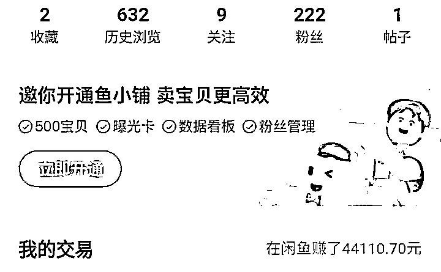
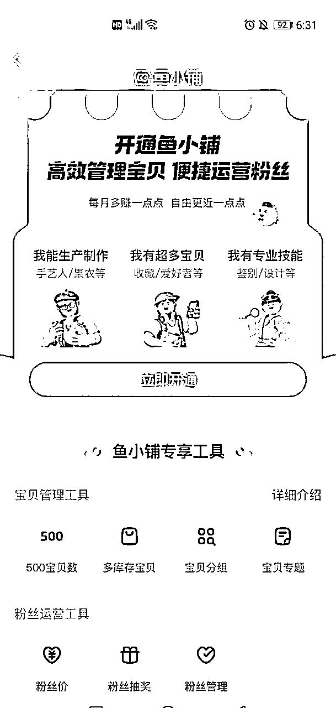
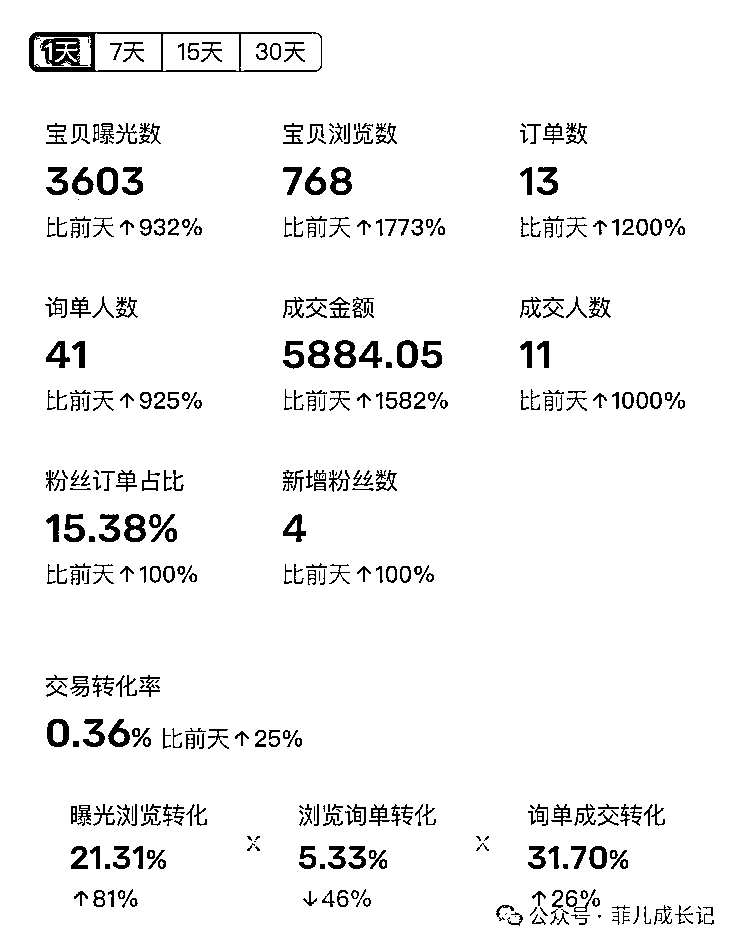
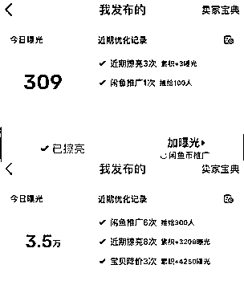

来源：https://wi0p58be3a2.feishu.cn/docx/Euwqd4l8EovbfpxFqj9c5DDXnAf
经常有宝子问甜橙：闲鱼卖货要不要开通鱼小铺，相信很多在做闲鱼卖货的伙伴都有这个疑问，咱们社群平时也总有小伙伴讨论这个问题。
今天甜橙就来跟大家聊聊什么是鱼小铺？要不要开通鱼小铺？开通鱼小铺后会有什么影响？
鱼小铺是阿里巴巴旗下的二手交易平台“闲鱼”的一项增值服务，主要面向各种类型的卖家开放。是卖家的工作台。通过鱼小铺，可以定制自己的店铺风格，得到更佳的广告宣传，更好的商品推销以及更多的流量支持。此外，鱼小铺还为卖家提供了诸多增值服务，如专属客服、精准投放广告等。
开通鱼小铺是免费的，不需要付费，平台有邀请通道，满足要求的用户在闲鱼主页头像下方就能看到通道。


开通条件：
1、闲鱼账号必须是正常使用的，通过了实名认证且授权了支付宝，芝麻信用等级在良好以上。
2、三个月内没有买家申请客服介入退款记录，注册时长三个月以上，且近30天内登陆闲鱼天数在16天以上。
3、该闲鱼账号以及名下关联账号不存在严重出售假冒产品等违规行为。
简单说就是正常使用，实名的闲鱼账号没有严重违规，30天内连续登陆16天以上的基本都有机会获得开通名额。
首先，因为鱼小铺是闲鱼平台为用户提供的更专业的运营版本，所以相较于普通账号，鱼小铺能够展示的产品数量有了显著提升，普通账号仅能展示50个产品，而鱼小铺则能展示500个产品。
其次，可以设置价格区间和多库存，这一点非常对于我们在闲鱼上卖货的专业玩家来说是一个非常好的，不用改价和卖出后重新上架。
同时，最大的优势就是可以设置宝贝分组，可以把店铺的产品名称进行分类，比如说电气类农用类五金类等等。这样可以快速的让用户根据自己的需求来去找自己的产品。
此外，还可以将爆款产品可以在主页进行置顶。也可以设置粉丝价，粉丝抽奖，粉丝管理等。

一般开通鱼小铺后会出现短期的限流情况，曝光大幅下跌，这是我学员开通鱼小铺后，曝光下降的例子。

曝光降低的原因：
（一）常卖宝贝领域选错
产品曝光流量主要来源于首页推荐、搜索、同城、会玩4大板块，而店铺曝光主要就是首页推荐以及搜索页面的排名流量。
当开通鱼小铺之后，选择常卖宝贝领域后，店铺就会有店铺标签，系统也会根据对应的店铺领域推荐流量。
比如之前主要卖的是家居用品，却选了数码产品，那么就会导致商品标签和店铺标签不匹配，所以也就可能无法获得到相应的推荐流量了，更改的方法也很简单，在个人资料里重新选择领域就可以。
（二）新号扶持推流结束
在连续上架新商品的初期，闲鱼平台会提供一个为期7至15天的扶持期，以帮助新品获得更好的曝光。一旦扶持期结束，平台将进入稳定运营阶段。若在此期间内，商品未能成功提升搜索排名，则其曝光率和流量自然会受到影响。
因此，许多商家在开通鱼小铺后所面临的流量下降，并非完全由鱼小铺本身造成。很可能是因为开通鱼小铺的时间与扶持期结束的时间相近，从而给人一种开通鱼小铺导致流量下降的错觉。
（三）频繁上架修改商品链接
很多人开通鱼小铺后，一想到可以设置价格区间和多库存，特别兴奋激动，所以就马上把店铺商品都编辑修改，价格库存，又大批量上架了一堆新链接，店铺频繁操作和修改商品会被系统识别为异常操作，就会容易被限流。
（四）店铺转化率降低
店铺的转化率是一个衡量店铺优质程度的标准，闲鱼平台也是根据转化率评估店铺是否优质。如果店铺的转化率高，那么平台会认为店铺较为优质，会继续推流；反之，如果转化率下滑，平台就会认为店铺质量降低，不再继续推流。例如，在普通闲鱼店铺上架50个商品，出单量为5个，那么转化率为5/50=10%。但是，如果开通鱼小铺并上架500个商品后，出单量为10个，那么转化率就变为10/500=2%。这说明随着上架商品数量的增加，转化率开始下降，并可能导致店铺流量下降。因此，很多人开通鱼小铺后发现，上架的商品越多，店铺的曝光率反而越低。因此，开通鱼小铺需要注意平衡上架商品数量和店铺转化率，避免因上架过多商品导致店铺质量下降的情况。
为了保证平台品类的多样性，闲鱼平台对每个人的店铺能够卖的产品进行了限制，因此别人卖得很好的品在你的店铺未必能卖得出去，而你卖得不错的品别人去上架可能也卖不动。因此，在店铺刚开始的阶段，我们可以先选取店铺卖得好的品类进行测试，然后再进行扩展延伸，等店铺逐渐趋向于垂直店铺时，再考虑是否需要开通鱼小铺。对于很多新人来说，看到可以上架500个品就一时冲动开通鱼小铺，但事实上大多数人可能连50个都未必上满。如果你的50个商品已经上满了，想要开通鱼小铺，你可以自我检查：这50个商品的链接是否优化过了？是否坚持上新？店铺销售品类是否趋向于垂直？店铺的成交率如何？总之，如果50个商品都没有发挥出应有的效果，那么即使上架500个，也不会有太大的改善。因此，在开通鱼小铺之前，需要先掌握少量商品的销售技巧和经验，确保店铺能够达到一个相对稳定的状态。
鱼小铺相较于普通账号更具有竞争优势，垂类店铺是专业卖家最终的归属，纵观闲鱼卖家排行榜前几名，哪一个不是鱼小铺呢？
但是要注意开通的时机，最好是有专业的运营技术之后再开通，只有用相应的方法，才能快速地突破限流，控制鱼小铺对账户流量的短期影响。
如果你的店铺现在流量本身就一般，那你可以考虑开个鱼小铺试试。但其实开了也没啥大作用，开了之后店铺也不会突然就好起来。还不如踏踏实实地去研究怎么选品，早点找到那些能爆的款。
删掉闲置物品是一个提高鱼小铺流量的重要步骤。
如果你的店铺一直不出单，曝光也差，可以考虑关闭鱼小铺并删掉一些闲置物品。删除的数量应该取决于店铺中需要改进的产品数量。
例如，如果你删除了五个闲置物品，可以考虑重新添加五个新的产品。经过一周左右的等待，流量就会开始恢复。
在退出之前，确保以下条件得到满足：
所有具有多规格或多库存的商品必须下架，确保在线商品数量不超过50件。
你的账户不应存在任何进行中的订单、退款申请、纠纷处理或抽奖活动等未完成的操作。
退出鱼小铺后，需要等待90天才能重新申请加入，因此取消鱼小铺操作需谨慎考虑。
好了，今天关于鱼小铺的分享就到这了~
往期文章：